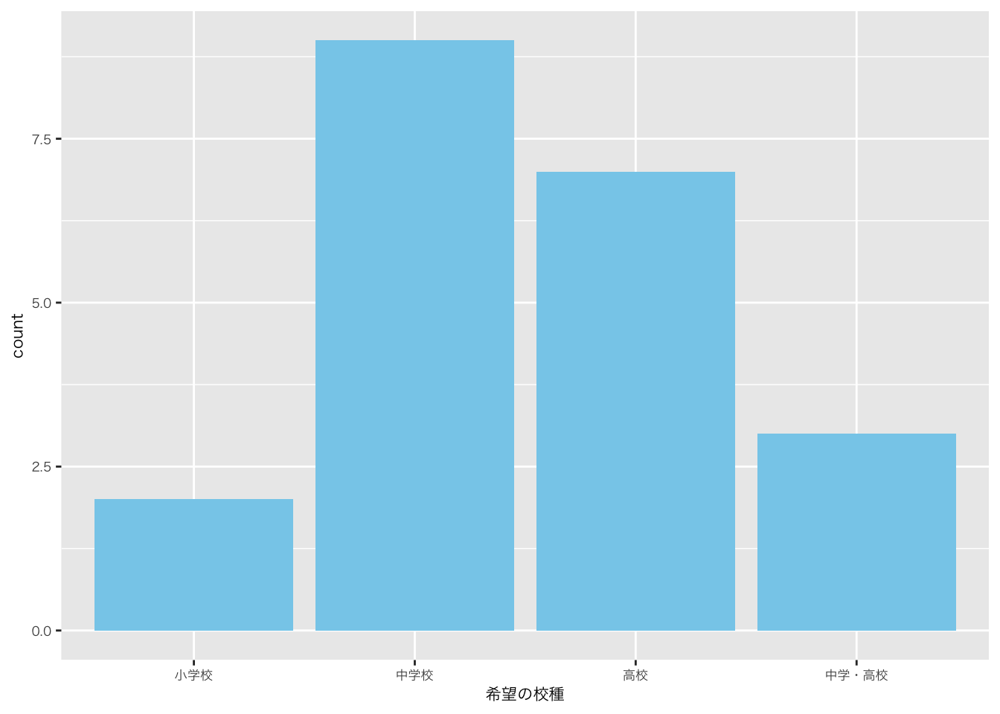
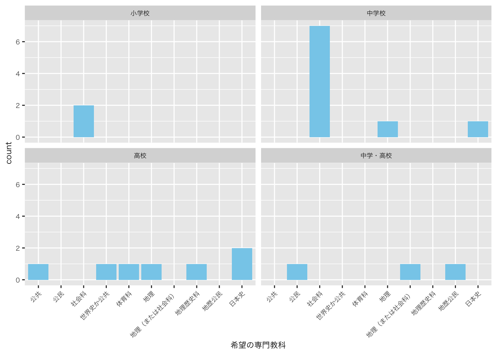
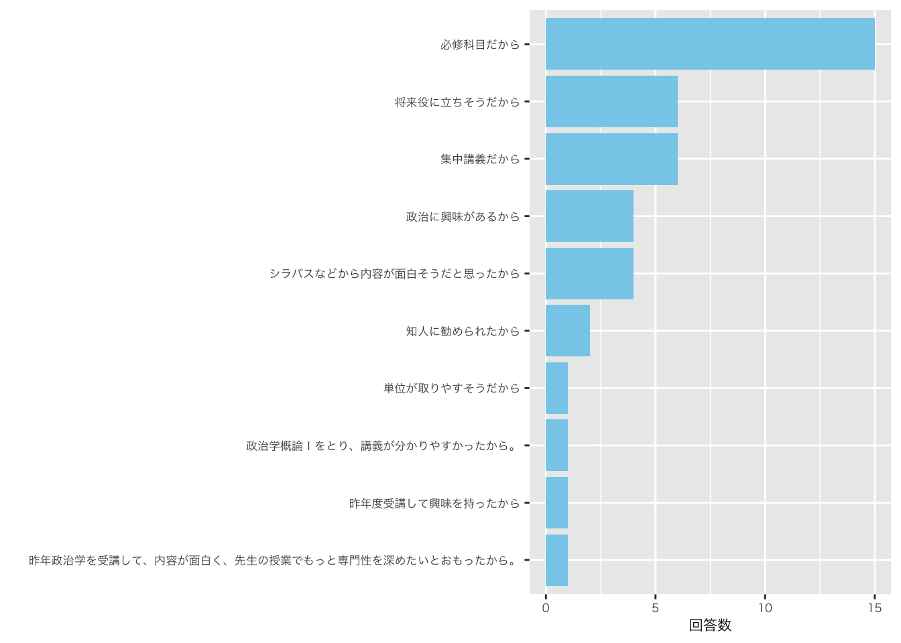
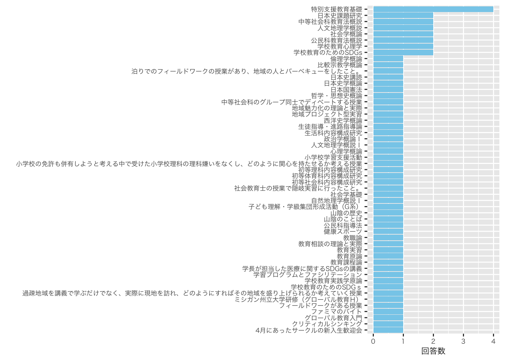
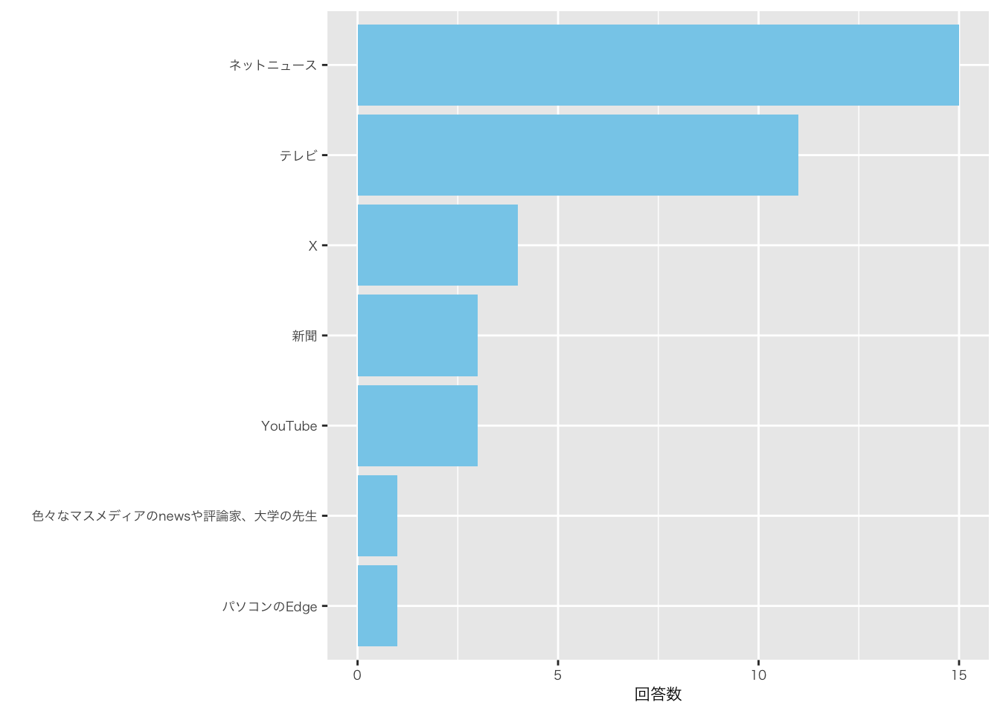

![]()

Q. 希望の校種
Q. 希望の専門教科

Q. 受講理由

Q. 好きな授業もしくは活動

Q. ニュースソース

Q. 最近､気になったニュース
| 最近､気になったニュース |
|---|
| 韓国の戒厳令 減税(基礎控除引き上げ、ガソリン税等々)先延ばし 財務省への批判が増大 |
| 「103万の壁」の引き上げについて、島根原発2号機再稼働、今季の雪情報 |
| 中山美穂がヒートショックで亡くなったこと。風邪が5類感染症になること。103万の壁が変わるかもしれないこと。 |
| 風邪が５類感染症になること。 |
| ヴィッセル神戸がJ1優勝、玉木議員が不倫、今年「ガキ使」復活かも |
| 紅白歌合戦の話題（西野カナが復帰後初テレビ歌唱）、同性婚を認めないのが違憲とされた3例目、ゴンチャ働き方改革 |
| 123万円案 悠仁さまの大学推薦 ドン･ファンの元妻無罪判決 |
| 韓国の大統領の問題、103万の壁の問題、島根原子力発電所の問題 |
| 島根原発が再開したニュース 103万円の壁のニュース 中山美穂が亡くなったニュース |
| 岡田将生の結婚、総理の交代、槙野智章の引退試合 |
| アメリカの大統領選挙、韓国の戒厳令、「103万の壁」について |
| ・フランスの首相が退陣＆就任 ・新語流行語大賞が「ふてほど」 ・韓国での戒厳令 |
| ・韓国のユン大統領に関するニュース ・アサド政権崩壊 ・ドラマ「ドクターX」がファイナルを迎えたこと。 |
| 韓国で起きた戒厳令 石破総理の居眠り プロ野球のNPBと労働組合の選手の待遇に関する会議 |
| 北九州のマクドナルドで中学生の男女が刺された事件 箱根駅伝に関するチーム密着のニュース 選抜21世紀枠候補で壱岐高校と大田高校が最終候補に残ったニュース |
| 中山美穂死亡 悠仁さま筑波大学合格 尹大統領の戒厳令発令 |
| 石破当選 岡田将生の結婚 大谷翔平の活躍について |
| 韓国の戒厳令 日本の内閣支持率 バスケットボールで富士通が皇后杯決勝に進出 |
| ・北海道・江別大学生暴行死事件 ・留萌の高校生殺害事件 ・「悠仁さま」筑波大合格 |
| 北九州のマクドナルドで中学生が刺された事件のニュース、元検事正の性的暴行の裁判のニュース、Ｊリーグの来季の日程が決まったニュース |
| 韓国の戒厳令、103万円の壁について、太平洋側の乾燥による火事の多発 |
Q. 島根県の好きなところ
| 島根県の好きなところ |
|---|
| 素晴らしい観光スポット(出雲大社、日御碕)が多い。 |
| いい意味で何もないところ（例：旅行などで県外に行った際に楽しめる） |
| 自然が多いところ。 |
| 都会よりも地域内のコミュニティが充実していること。車があれば暮らしやすいところ。 |
| 景色 |
| 自然が豊かなところ、温泉がたくさんあるところ |
| ほどよい田舎で生活するのにはなにも困らないところ。 |
| 落ち着くことのできる場所が多いことや、都会みたいにいつ行っても人がたくさんな場所がないところです。 |
| 人が少ないゆえに、電車などがすいていて基本的には座ることができるところ。 |
| 自然が多いところ。 |
| アクアスがあるところ。 |
| 松江城とその城下町の風情を残すまちの様子 |
| 奥出雲和牛、星がきれいなところ |
| 宍道湖・中海・大橋川・日本海といった日本屈指の水が豊かなところ（釣りが趣味のため）、地方ならではの昔ながらの景観が残っているところ。 |
| 横に長い島根県は、安来から津和野まで、それぞれの地域性があり、歴史的な街並みや観光スポットが存在していること。 |
| 美味しいご飯がいっぱいあるところ。 |
| 暖かい人しかいない |
| 人が優しいところ |
| 桂島 |
| バスケチームの島根スサノオマジックの試合を観戦できること。 |
| 人が優しいところ。 |
Copyright
苅谷千尋 2024